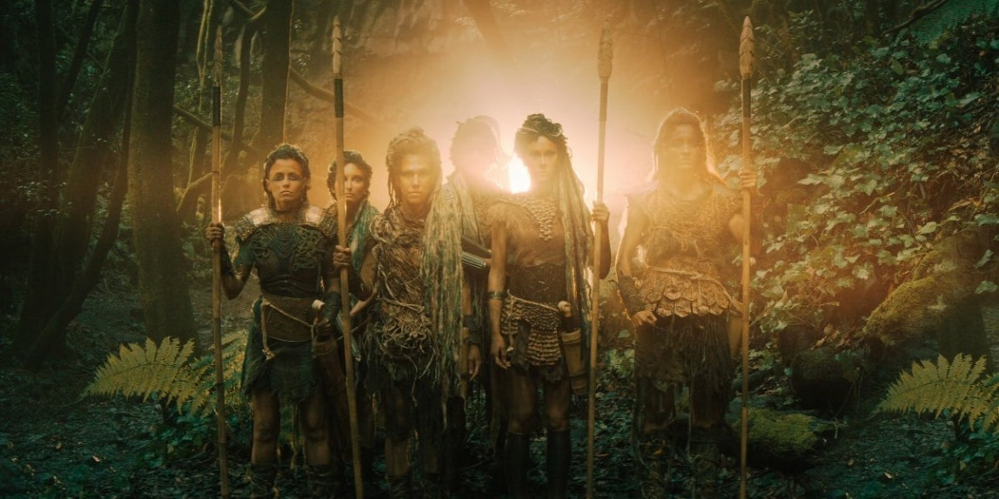
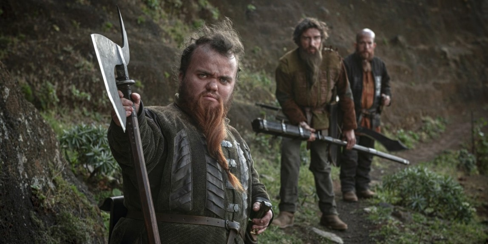
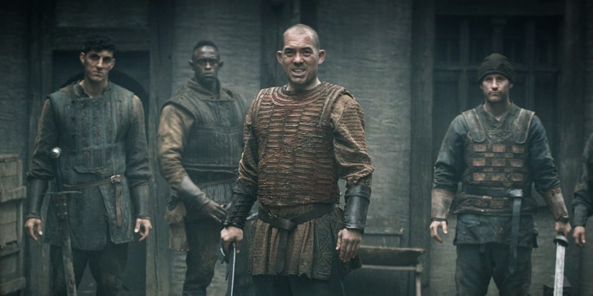

Нечеловеческая раса, представители которой невысоки ростом и часто работают на службе у людей в Северных Королевствах.

Дриады
Полностью женская раса, обитающая в лесу. Дриады — бесстрашные воины, живущие в полной гармонии с природой. Они появились на Континенте задолго до Сопряжения Сфер.

Краснолюды
Древняя раса, которая населяла Континент задолго до людей. Сильные, крепкие и смелые персонажи. Часто носят густые бороды.

Люди
Раса, которая пришла править большинством других. Люди появились на Континенте после Сопряжения Сфер и с тех пор пробиваются к вершине пищевой цепи.
Эльфы
Древняя раса, которая управляла Хаосом и населяла Континент задолго до людей. Со времен Великой Чистки эльфы живут в подполье.